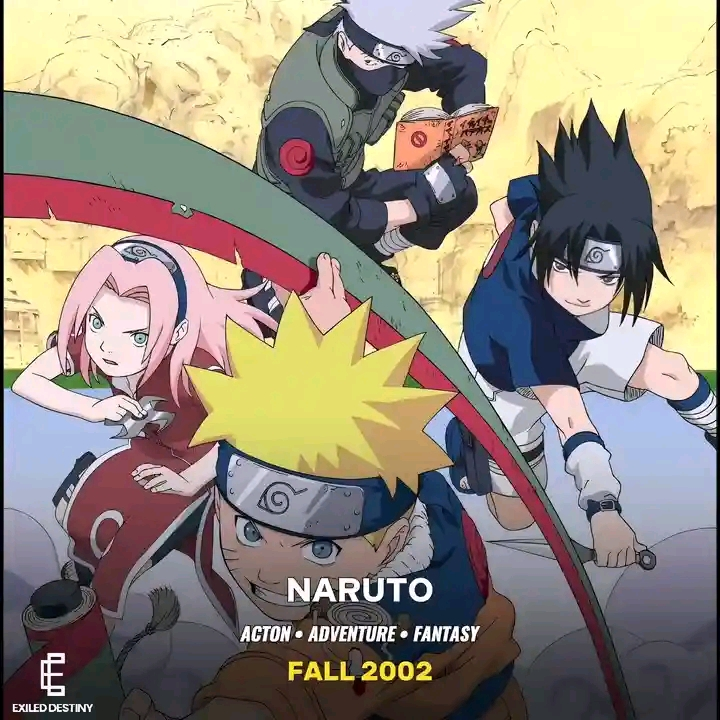
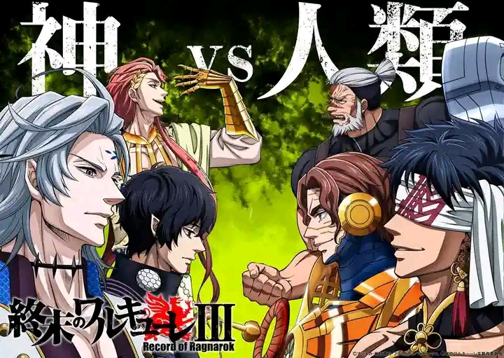
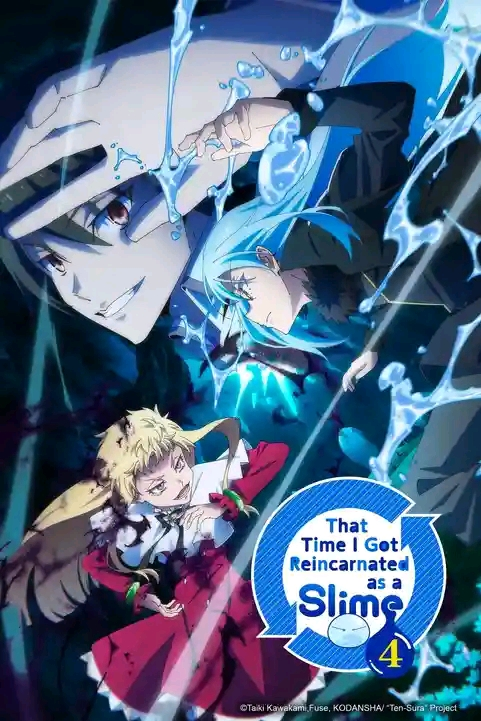

Featured stories
Choose a story and discover a new world.

NARUTO
Naruto was shunned by his village yet dreamed of becoming Hokage to earn everyone’s respect. He trained endlessly and never gave up despite hardships and losing friends. He faced powerful enemies and overcame great suffering along his journey. Naruto kept believing he could change the world through kindness and understanding. In the end, he fulfilled his dream and became the Seventh Hokage.

ONE PIECE
Monkey D. Luffy sets sail to find the legendary treasure One Piece and be King of the Pirates. He gathers loyal friends who each carry their own precious dreams and goals. Together they sail across dangerous seas facing powerful foes and terrible challenges. Luffy always stays true to himself, smiling and protecting his crew no matter what happens. He journeys onward seeking true freedom while reaching the greatest adventure ever.

BLACK CLOVER
Asta lives in a magic world yet is born completely without magic power at all. Everyone doubts and mocks him, but he swears he will still become the Wizard King. He receives a mysterious grimoire that can cancel and destroy magic instead of casting it. Asta joins the underestimated Black Bulls and works harder than anyone else there. He shows that effort, courage, and heart can truly overcome any natural disadvantage.

RECORD OF RAGNAROK
The gods vote to destroy humanity thinking they have become wicked and unworthy. One goddess proposes Ragnarok instead: thirteen strongest humans will fight thirteen mighty gods. If humanity wins enough battles, they shall live; lose, and vanish completely forever. History’s bravest warriors rise fighting not just for themselves but all people. They prove humans are brave, noble, and deserve to exist against divine judgment.

I GOT REINCARNATED AS A SLIME
An ordinary man dies and reincarnates in another world not as a hero but a simple slime. He names himself Rimuru Tempest and gains amazing powers to absorb and understand everything. Rimuru befriends many creatures building a peaceful land where everyone is treated fairly. He unites different races and resolves conflicts without ruling over them harshly. From a humble slime, he grows into a great leader respected by all nations.

MY HERO ACADEMIA
Izuku Midoriya dreams of being a hero even though he was born with no special powers. His brave and selfless nature impresses the greatest hero, All Might, who shares his strength with him. Izuku enters a famous hero school where he trains hard and faces many strong classmates. He confronts dangerous villains while learning what it truly means to help and protect others. Through every struggle, he proves that anyone can become a hero if they never give up.